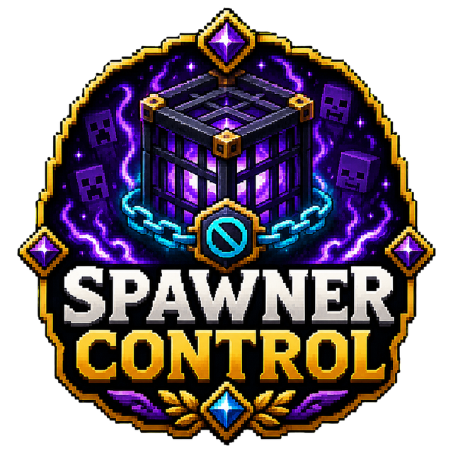

✓
Activation range control
Set how close a player must be before a spawner works.

Save and tune individual mob spawners with layered rules and safety caps.
Full overview
MythicSpawnerControl provides focused control over the distances used by mob spawners. It allows administrators to balance farms and server performance without replacing the complete vanilla spawner system.
Saved spawner locations make it possible to manage important or intentionally placed spawners rather than applying one blind global rule to every world object.
How it works
Administrators register or manage spawner locations and define the player activation distance and mob spawn radius. The plugin applies those values through lightweight checks during normal operation.
Smaller radii can reduce oversized farm designs, while carefully chosen activation ranges ensure players must remain meaningfully close to production.
Administration
The project is planned as a direct release. Defaults should be tested against normal mob-cap behaviour, stacked spawners and any third-party spawner plugins before public deployment.
Feature breakdown
Each headline feature is expanded below so visitors can understand the real server use rather than seeing a short tag list.
Set how close a player must be before a spawner works.
Restrict how far spawned mobs may appear from the block.
Keep managed spawners available across restarts.
Register and inspect controlled locations from the server.
Focuses specifically on spawner operation rather than scanning all mobs.
Reduces extreme layouts while preserving legitimate survival use.
Getting started
This project is not currently offered as a public platform download; its page documents the system and development status.
The direct-release build is still planned.
Test default activation and spawn radii in a staging world.
Verify compatibility with stacked or custom spawner systems.
Document the final farm rules before public release.
Source architecture
commands (1), data (1), listeners (1), me.Ghoul.SpawnerControl (1), models (1), rules (1), utils (1)
Main, SpawnerRuleResolver, SpawnerUtil
SpawnerControlCommand
SpawnerControlListener
SpawnerDataManager
SpawnerSettings
Configuration reference
Top-level sections and defaults are summarised from the supplied resources.
Permissions
Defaults and descriptions come directly from plugin.yml.
Allows access to SpawnerControl admin commands.
Default: op
Commands
Aliases, usage and permissions come directly from plugin.yml.
Save and tune mob spawner behaviour.
Aliases: /sc, /spawnctrl, /spawnerctrl · Usage: /spawnercontrol help · Permission: None declared
Source-verified reference
This static reference is built from the supplied plugin.yml, YAML resources and Java source. No browser-generated documentation is used.
Related projects
Farming Automation
Let animals breed naturally using nearby food sources.
Combat Immersion
Responsive blood trails, pools, bursts and bleeding effects.
Survival Utility
Crystal-themed healing tools for survival gameplay.